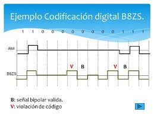

B8ZS es una mejora del código AMI diseñada para resolver el problema de largas secuencias de ceros. Según Stallings y Forouzan, este código es ampliamente utilizado en sistemas de transmisión digital de alta velocidad.
B8ZS sustituye secuencias de ocho ceros consecutivos por patrones especiales de voltaje que provocan transiciones controladas. Esto permite mantener la sincronización y detectar errores. Tanenbaum explica que esta técnica conserva las ventajas del código bipolar y mejora significativamente la confiabilidad.

En conclusión, B8ZS es una solución eficiente para mejorar el desempeño del código AMI en enlaces de alta velocidad.